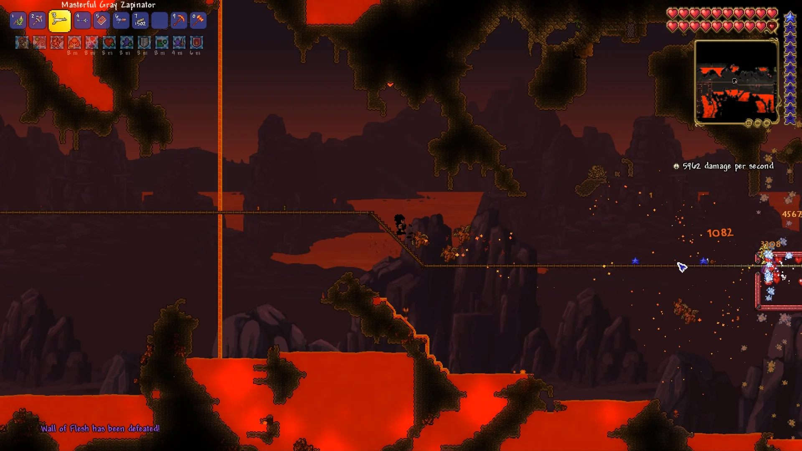

El Inframundo
Publicado: 13 mayo 2025
El Inframundo es la zona más profunda del mundo de Terraria. Está repleto de lava, enemigos demoníacos y estructuras en ruinas. Aunque representa un gran peligro, es una etapa clave antes de entrar al Hardmode.
🔥 Condiciones extremas
- El suelo está cubierto de lava, lo que obliga a construir caminos o usar pociones de resistencia al fuego.
- Muchos bloques pueden hacerte daño al tocarlos, como la piedra infernal (Hellstone).
- Las construcciones contienen cofres, enemigos y objetos raros como muñecos vudú.
👹 Enemigos a enfrentar
- Hellbats: murciélagos rápidos y molestos que atacan en grupo.
- Demons: lanzan proyectiles y tienen posibilidad de soltar muñecos vudú del guía.
- Lava Slimes: al morir dejan lava, lo que puede generar trampas peligrosas.
🔧 Recursos valiosos
- Hellstone: combinación de piedra infernal + obsidiana, esencial para fabricar armaduras, picos y herramientas muy poderosas.
- Muñeco vudú del guía: al lanzarlo a la lava, invoca al jefe final del modo normal, el Muro de Carne (Wall of Flesh).
⚔️ Prepararse para el jefe
El Muro de Carne es el guardián del Hardmode. Antes de enfrentarlo:
- Construí un puente largo de bloques seguros a lo largo del Inframundo para facilitar la pelea.
- Llevá muchas pociones y municiones si usás armas a distancia.
- Matá al guía si querés que reaparezca, ya que necesitás su muñeco para invocar al jefe.
Una vez derrotado el Muro de Carne, el mundo cambiará drásticamente: comenzará el Hardmode, con enemigos más fuertes, nuevos minerales y biomas. El Inframundo marca el cierre de una etapa y el inicio del verdadero desafío.